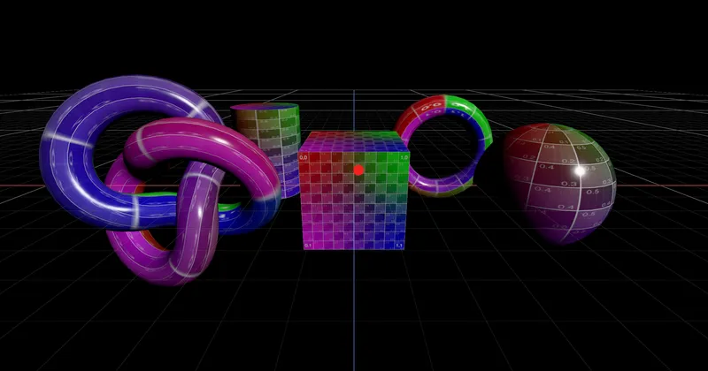

3D > Interaction > Interaction > MouseEvent
Raycasting (Precision Picking) - RedGPU WebGPU Example
High-precision raycasting detecting exact hit points and face indices.
복잡한 메쉬 표면의 정확한 교차점과 면 인덱스를 검출하는 정밀 레이캐스팅입니다.

3D > Interaction > Interaction > MouseEvent
High-precision raycasting detecting exact hit points and face indices.
복잡한 메쉬 표면의 정확한 교차점과 면 인덱스를 검출하는 정밀 레이캐스팅입니다.
